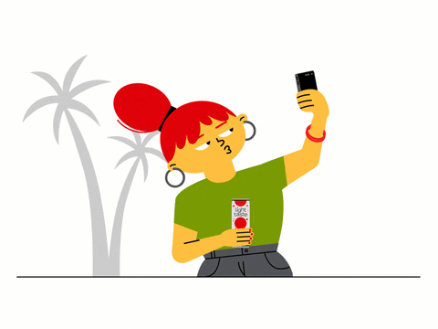
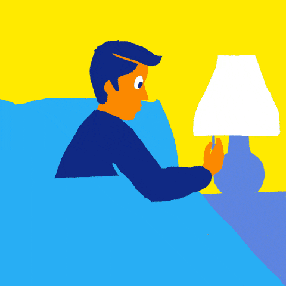

The side of social media that you all know to be true…
"Social Media is the Highlight real, Not the full story"


When thinking about my earliest Internet use, I was instantly taken back to the days of Google+ and my introduction to social media.
I was just starting 6th grade when I created my Google+ profile. The first photo I uploaded was a clay sculpture I had just purchased at a local art festival
( I called him my Rainbow Wildman.)
Rainbow Wildman got 88 likes, which I still remember now, because no photo that followed him every came close to that number again.
The photos I posted of me, of my life, photos that I thought were actually “post-worthy” got little attention and had negative impacts on my image of myself and my life.
I started to compare the number of likes, the number of friends, everything.
It got worse with Instagram, Facebook, Snapchat, etc.
I’ve been battling with social media and my self-worth, my confidence, and my happiness since the start of my Internet usage, since I was 11.
This Internet time capsule is meant to be a homage to the aesthetics of Google+, and old social media websites, but a critique of the CONTENT that exits within them.
{kind=link}
{kind=link}